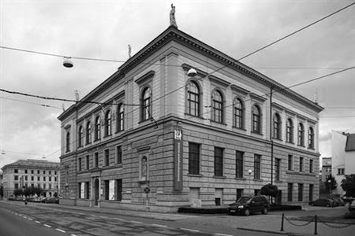
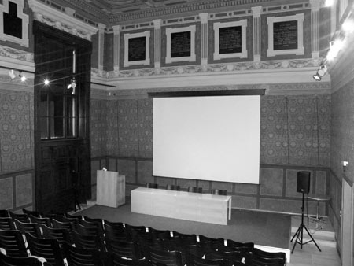
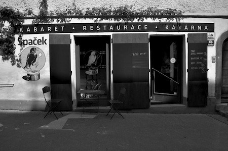
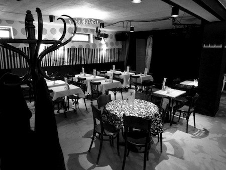

Místa konání
Symposium se bude konat v samém historickém centru města Brna, v Uměleckoprůmyslovém muzeu (Moravská galerie) a v Kabaretu Špaček. V okolí se nachází množství restaurací a hospod, některé z nich oplývají dobrým jídlem, mnohé dobrým pivem nebo vínem. Muzeum i kabaret jsou jen pár minut chůze od vlakového či autobusového nádraží.
Brno má mezinárodní letiště a je dosažitelné přímými vlaky z Prahy (~ 2,5 hodiny), Berlína (~ 7 hodin), Vídně (2 hodiny), Katowic (3 hodiny), Varšavy (7 hodin) či Bratislavy (2 hodiny).
TypeTalks: Uměleckoprůmyslové muzeum
V budově Uměleckoprůmyslového muzea se nachází stálá expozice užitého umění od středověku po současnost, zastoupeny jsou sbírky skla, keramiky a porcelánu, textilu, nábytku, kovů a grafického designu. Kromě klasické expozice mají návštěvníci možnost absolvovat virtuální prohlídku muzejních exponátů soustředěných v tzv. mikrogalerii. Vedle sálů pro krátkodobé výstavy je zde Camera, jediný stabilní výstavní prostor věnovaný výhradně fotografii v rámci českých muzeí umění.
Uměleckoprůmyslové muzeum disponuje přednáškovým sálem s kapacitou 100 míst. Návštěvníkům slouží muzejní obchod s širokou nabídkou publikací o výtvarném umění a kavárna s internetem.
 
Adresa:
Husova 14
662 26 Brno
Google maps
TypeShorts: Kabaret Špaček
Kabaret Špaček je malá nekuřácká restaurace, kavárna a kabaret skoro v centru města a v těsné blízkosti místa konání hlavních přednášek. Více naleznete na stránce kabaretu.
 
Address:
Kopečná 46
Brno
Google maps
Jídlo a pití jinde
Připravili jsme pro vás Google mapu s našimi oblíbenými místy:
Food, coffee, beer, and wine in Brno
Design © TypeTalks, 2010–13.
Content © Respective speakers, 2010–13.